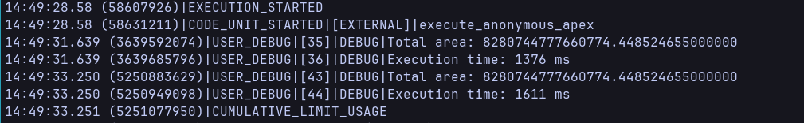

Impact of Clean Code on Salesforce
I recently watched a great presentation by Casey Muratori on Clean Code, Horrible Performance. Before watching this, I never thought about the impact of using a specific part of the syntax on code performance. Sure, I was aware of some examples in JavaScript, i.e. using for loops vs forEach, but I never assumed this would apply to all languages, or Apex in particular.
In his talk, Casey shows 20x improvements in C code. This seems a bit extensive and extreme, but it's not unreasonable as C is much lower level than Apex or JavaScript.
Before continuing, I strongly recommend watching his talk and reading the article here: https://www.computerenhance.com/p/clean-code-horrible-performance
Salesforce and Apex
Salesforce uses Apex as its backend language. It is a compiled language, similar to Java. There are not a lot of low-level explanations of how Apex works or what it is doing under the hood. Most of the time we just infer what happens by monitoring the logs or behavior. Usually, you also do not care about that.
Most of the time, the code we write is mostly related to some lightweight business logic or data manipulation. The real issues happen when you try to ship applications built on top of Salesforce that do something heavy (i.e. CPQ engines, some sort of financial processing, document generation, etc).
Clean Code test in Apex
I did not have time to write all options presented in the talk, but I took two opposing approaches:
- Using polymorphism
- Using class with type as a property and a map to get different implementations
The following is the code for the Shape implementation using Polymorphism.
Shape interface:
public interface Shape {
Double getArea();
}
Shape implementation class:
public with sharing class Shapes {
public class Circle implements IShape {
private Decimal radius;
public Circle(Decimal radius) {
this.radius = radius;
}
public Decimal getArea() {
return Math.PI * this.radius * this.radius;
}
}
public class Rectangle implements IShape {
private Decimal length;
private Decimal width;
public Rectangle(Decimal length, Decimal width) {
this.length = length;
this.width = width;
}
public Decimal getArea() {
return this.length * this.width;
}
}
public class Triangle implements IShape {
private Decimal base;
private Decimal height;
public Triangle(Decimal base, Decimal height) {
this.base = base;
this.height = height;
}
public Decimal getArea() {
return this.base * this.height / 2;
}
}
}
Shapes V2 (no polymorphism):
public with sharing class ShapesV2 {
public enum ShapeType {
CIRCLE,
RECTANGLE,
TRIANGLE
}
public class Shape {
private ShapesV2.ShapeType type;
private Decimal width;
private Decimal height;
public Shape(ShapesV2.ShapeType type, Decimal width, Decimal height) {
this.type = type;
this.width = width;
this.height = height;
}
private Map areaModifier = new Map{
ShapeType.CIRCLE => Math.PI,
ShapeType.RECTANGLE => 1,
ShapeType.TRIANGLE => 0.5
};
public Decimal getArea() {
return this.areaModifier.get(this.type) * this.width * this.height;
}
}
}
What was measured was the time it takes to calculate the area of a bunch of shapes. I created the list of 100, 1000, 50000 shapes and measured the time it takes to calculate area of various shapes (equal number of each).
First number is for using Shape Types and second is for polymorphism. I tried it also running in separate transactions, but it did not change the outcome.
- 100:
- 1000:

- 50000:

Outcomes and next steps
The results show that using polymorphism degrades the performance by about 20%. This is not a big deal, and definitely not as C code 20x difference, but it might still be significant. Salesforce has hard restrictions and imposes its governor limits, so getting 20% more CPU just by not following "best practices" is not a bad deal.
There are also other benefits of not using polymorphism. Salesforce does not have a nice debugger and you mostly rely on printf debugging and reading the logs. Using lots of small classes and deeply nested method calls makes reading the logs and debugging harder.
I think if you are not building a managed package where you want to allow customers to implement an interface to change internal behavior of your code, you should probably just stick to if/then/else and maps. It will also make the code much easier for both debugging and maintenance.
I would like to see some more tests done and explore some of the Apex performance in more depth. It is quite interesting to see how small changes make a big difference. Maybe there are other approaches we usually take that are actually quite bad for performance.